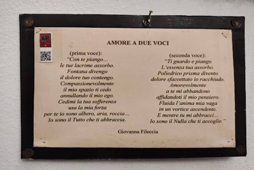

PEPPINO IMPASTATO

Giuseppe “Peppino” Impastato nasce a Cinisi il 5 gennaio del 1948. È un giovane attivista, simbolo della lotta contro la criminalità che perde la vita la notte dell’8 maggio del 1978.
Fin dalla tenera età Peppino assiste ad episodi di violenza generati dai clan mafiosi di cui fa parte la sua famiglia. Il padre di Peppino, Luigi Impastato, è infatti un membro di Cosa Nostra.
Nel 1963 viene ucciso suo zio materno, Cesare Manzella, fatto esplodere nella sua stessa auto per una faida. Il successore dello zio, ai vertici dell’organizzazione, è Gaetano Badalamenti, con cui il padre Luigi stringe una forte amicizia. Peppino capisce di non voler far parte di questo mondo; inizia così il suo percorso di lotta contro la mafia.
Viene cacciato di casa dal padre che non condivide il suo orientamento politico di sinistra, ma per sua fortuna la madre Felicia e il fratello Giovanni appoggiano le sue scelte. Il padre, successivamente, in cerca di protezione per la sua famiglia e suo figlio, parte per l’America per chiedere aiuto ad un suo cugino, un importante esponente della famiglia Impastato. Quest’ultimo gli dà un regalo da consegnare a Gaetano Badalamenti. Purtroppo quando lo apre, il boss non ne è turbato e, considerato il suo potere in quel momento storico, lo rifiuta immediatamente. Il dono in questione è una cravatta; si tratta però di un regalo con un significato sottinteso: il boss Tano deve garantire la protezione di Peppino e della sua famiglia altrimenti verrà “strozzato” dal nodo della cravatta; in sostanza verrà ucciso.
Nel 1965 Peppino fonda il giornalino “L'idea socialista” che viene poi sequestrato dal giudice Domenico Pellerito e aderisce al PSIUP (Partito socialista italiano di unità proletaria); dal 1968 in poi partecipa a svariate attività di gruppi comunisti.
Nello stesso anno nasce, dal Comune di Cinisi, il progetto della costruzione di una pista di atterraggio. La zona in cui sorge è però abitata da circa 200 famiglie, la maggior parte delle quali vi soggiorna tutto l’anno, mentre altre vi si recano solo nel periodo estivo. Bisogna considerare anche che la produzione ortofrutticola, che si svolge nell’area, costituisce il polmone dell’economia del paese.
In realtà in precedenza si ipotizzava l’utilizzo della piana di Bagheria che risultava meno ventosa, ma per Badalamenti l’aeroporto di Punta Raisi è un’occasione da non perdere: vicinissima a Cinisi, sarebbe ideale per gestire i traffici di droga dal sud America. Appalti e subappalti per costruire una struttura da due milioni e cinquecentomila metri quadri di cemento costituiscono, tra l’altro, l’occasione per una speculazione edilizia redditizia sulla costa di Cinisi perché offre la possibilità di accaparrarsi con pochi denari quei terreni per rivenderli, dopo qualche anno, a un prezzo venti volte più alto.
Significativa è l’azione di Peppino Impastato, che decide di lottare contro la costruzione della pista ed ottiene l’appoggio della maggioranza dei contadini. Vengono organizzate due manifestazioni: nel corso di una di queste, alcuni giovani, tra cui anche Peppino, vengono denunciati per organizzazione di manifestazione non autorizzata. C’è un momento in cui Peppino addirittura propone l’occupazione del Municipio: può essere una scelta storica; si sceglie, però, la via della pacifica dimostrazione.
Nel 1975 crea il Circolo "Musica e Cultura", un'associazione che promuove attività culturali e musicali e che diventa il principale punto di riferimento per i giovani di Cinisi.
Nel 1977 Peppino fonda Radio Aut in un paesino vicino a Cinisi, Terrasini. La radio viene utilizzata principalmente per ridicolizzare i mafiosi, fra i quali il più noto è il boss Gaetano Badalamenti, chiamato da Peppino «Tano Seduto capo di Mafiopoli». La trasmissione di punta della programmazione è quella di Onda pazza, condotta proprio da Peppino, spesso accompagnato da un amico. L’arma principale di Peppino è la sua capacità di deridere i boss con un’ironia sprezzante. L’assenza di altre radio contribuisce ad aumentare il numero di ascoltatori di Radio Aut e questo è l’inizio della fine per Peppino, in quanto sta puntando sempre di più i riflettori sulle azioni mafiose.
La notte del 19 settembre del 1977, Luigi Impastato, muore investito da un’auto. Quasi sicuramente si è trattato dell’ennesimo omicidio di mafia. Morto il padre, il fratello Giovanni cerca di convincere Giuseppe a interrompere la sua convinta attività antimafia, dato che non rimane più nessuno che lo può proteggere. Peppino decide di non ascoltare i consigli del fratello e di continuare per la sua strada. In tutta risposta al funerale del padre, Peppino si rifiuta addirittura di stringere la mano ai boss di Cinisi, suscitando molto clamore.
Nel 1978 decide di partecipare alle elezioni comunali a Cinisi. Non ne conosce gli esiti, però, perché tra la notte del 8 e il 9 maggio del 1978 viene fatto saltare in aria da una bomba di tritolo lungo la ferrovia di Cinisi che collega Palermo e Trapani.
Le autorità cercano di liquidare la morte di Peppino come un incidente, conseguenza di un fallito attentato che Peppino avrebbe voluto compiere contro la ferrovia, ma la realtà è un'altra: il giovane attivista è stato ucciso dalla mafia contro la quale lottava ormai da anni.
Il delitto passa paradossalmente quasi inosservato a livello nazionale, poiché proprio in quelle stesse ore viene ritrovato il corpo senza vita del ben più noto presidente della Democrazia Cristiana Aldo Moro in via Caetani a Roma.
LA RICERCA DELLA VERITÀ
Nel gennaio 1988 il Tribunale di Palermo invia una comunicazione giudiziaria a Badalamenti. Nel maggio del 1992 lo stesso tribunale decide di archiviare il caso, escludendo la possibilità di poter individuare i colpevoli anche se si ipotizza la possibile responsabilità dei mafiosi di Cinisi.
Nel giugno del 1996, in seguito alle dichiarazioni di Vito Palazzolo (l’assassino di Peppino), che indicano in Gaetano Badalamenti il mandante dell'omicidio, l'inchiesta viene riaperta. Nel novembre del 1997 viene emesso un ordine di cattura per Gaetano Badalamenti, mandante del delitto. L'11 aprile 2002 Gaetano Badalamenti viene finalmente riconosciuto colpevole e condannato all'ergastolo.
I “CENTO PASSI”
Il boss mafioso vive per tutta la sua vita a soltanto 100 passi dalla casa Impastato: da questo dettaglio il regista Marco Tullio Giordana coglie lo spunto per il film “I 100 passi” diretto nel 2000. Oggi, se si percorrono quei cento passi, si possono osservare diverse piastrelle colorate e decorate che riportano frasi inerenti all’etica di Peppino. La casa di Badalamenti, invece, è stata confiscata ed è diventata la biblioteca comunale di Cinisi. È importante notare come questa residenza di un uomo privo di umanità sia ora diventata una risorsa del sapere aperta a tutti.
Dal 2005, inoltre, la casa della famiglia Impastato è diventata ufficialmente “Casa della memoria Felicia e Peppino Impastato" per ricordare la storia di Peppino e per chiedere giustizia contro le violenze mafiose.
Tutto questo è stato possibile grazie a Felicia Impastato, una madre che non arrende dopo la morte del figlio e continua a combattere come Peppino contro la mafia. Felicia in prima persona apre le porte di casa sua per raccontare a tutti la .

Casa Memoria è un luogo di divulgazione della verità, un avamposto della resistenza civile contro il potere della mafia e la sua cultura, la testimonianza concreta di un’esperienza di lotta convinta, di un’intera vita spesa con coraggio e determinazione.
Ciò che più ci ha colpite, durante la nostra visita a Cinisi, è stato poter osservare dal vivo il luogo in cui tutto ha preso vita. Camminare all’interno della casa di Peppino, poter vedere dove dormiva, dove mangiava, dove si dilettava nelle sue passioni, come la scrittura, ci ha fatto capire il suo immenso coraggio.
Peppino a soli 17 anni si è esposto pubblicamente per combattere contro la mafia, ha pubblicato articoli di giornale firmando, con il proprio nome, senza timore.
Libera ci ha regalato quest’esperienza indimenticabile proprio nell'anno in cui anche noi abbiamo 17 anni: proprio per questo abbiamo potuto sentirci più vicine alla sua esperienza e trarne coraggio. Questo viaggio ci ha fatto crescere e ci ha spronato a combattere contro le ingiustizie senza paura.
Testo a cura di:
- Cagnano Emma
- Lorenzetto Laura
- Ruggiu Tanja
Trasposizione sul sito a cura di:
- Bizzozero Riccardo
- Parisi Diego
- Gentili Giacomo